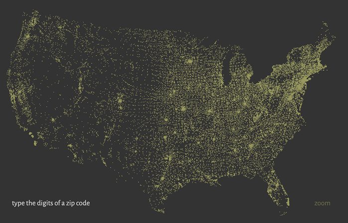
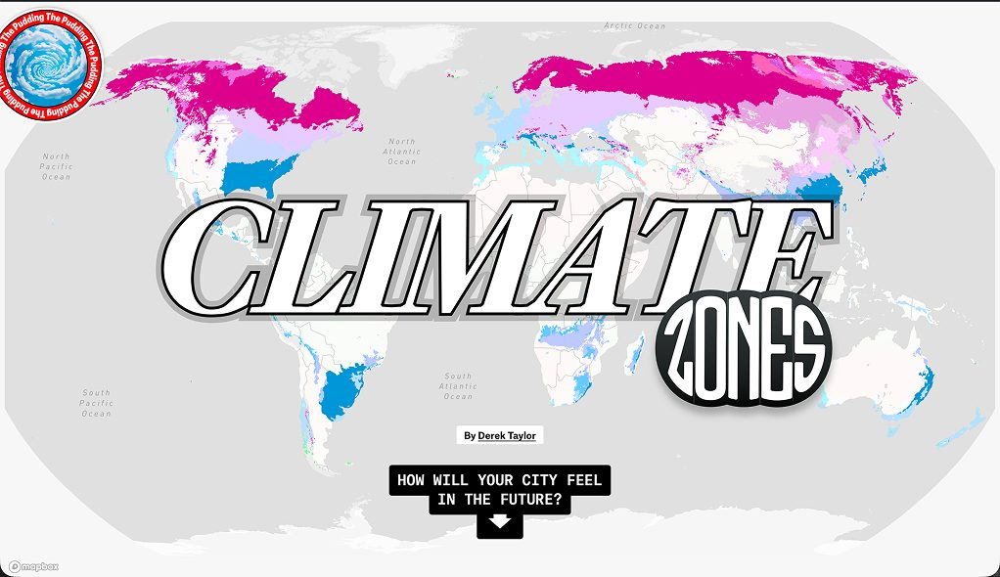
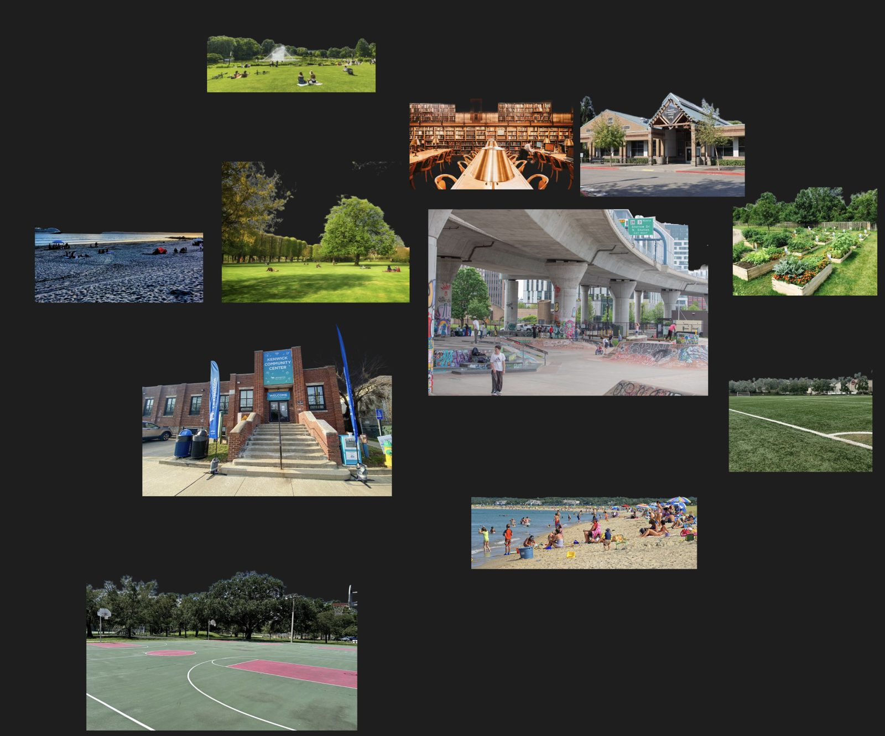
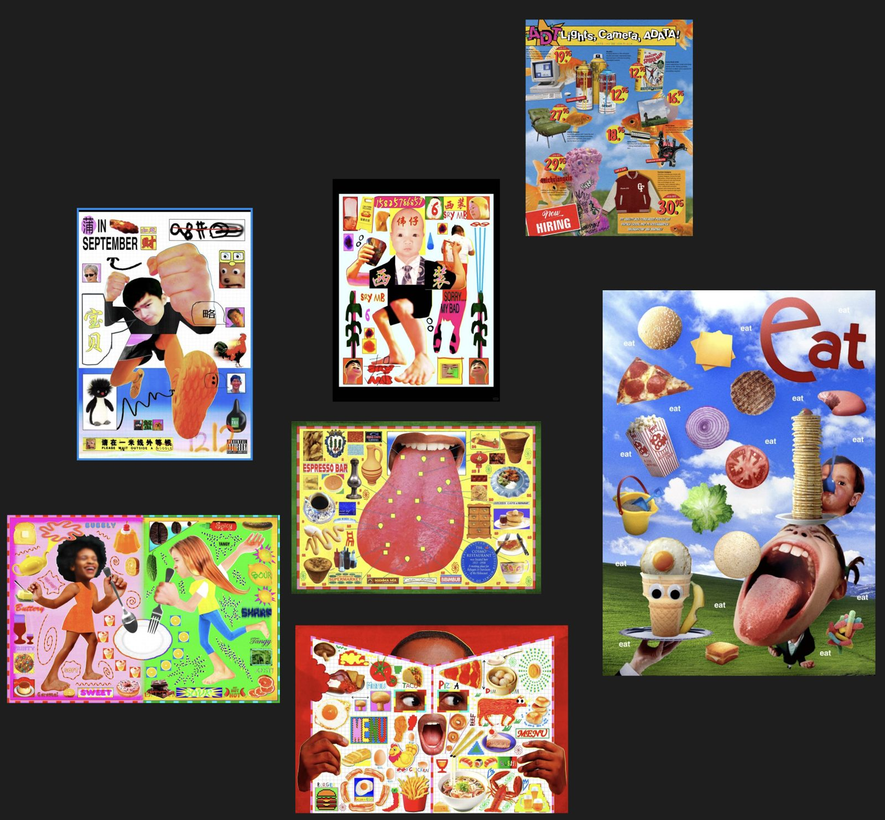

Oct 2026 · SVSD design challenge
Fee Fi Fo Fund
Problem statement
A teen who feels confused about where their paycheck goes needs to see how their taxes are spent, but government budgets are bland and hard to navigate.
Our SVSD submission video, made by Christine Lai.
How It Went
-
Oct 17Research
Why Do We Pay the Toll?
Crossing the Bay Bridge, my friend asked why we pay a toll if our taxes already cover roads. I didn't know, and the budgets that would tell me were bland and hard to navigate.
SVSD asked for a storytelling project for a specific group. Ours was teens and young adults getting their first paychecks.
-
Oct 18Tech
Every Zip Code
All 50 states and about 41,000 zip codes, at three levels:
- Nation: federal spending, clearly marked
- State: your state's spending, plus the federal money it gets
- City or county: local budgets and services
Source: Census Bureau, 2022 Census of Governments; U.S. Treasury, Final Monthly Treasury Statement, FY2026
-
Oct 18Research
Maps I Looked At
zipdecode lights up zip codes as you type. Climate Zones asks how your own city will feel. I wanted both: type your zip, and now it's about you.

zipdecode by Ben Fry 
Climate Zones by Derek Taylor, The Pudding -
Oct 18Design
Version 1: Boxes
Every category in its own box. Accurate, and it read like a spreadsheet.

Accurate, but it read like a spreadsheet. -
Oct 18Design
Version 2: Floating
Objects floating around the page, sized by how much money went there. I also added psychedelic animations. They lasted about a day.

Sized by spending. The psychedelic animations lasted about a day. -
Oct 19Design
Version 3: File Folders
Hand lettering and folders for Nation, State and City.

Hand lettering and folders for Nation, State and City. -
Oct 21Product
Out of $100
Nobody can picture $1.7 trillion. Everybody can picture $100. So every number became dollars out of $100, and the story makes you the main character.
Source: $1.7 trillion is federal Social Security spending. U.S. Treasury, Final Monthly Treasury Statement, FY2026

Everything in dollars out of $100, because nobody can picture $1.7 trillion. -
Oct 21Product
Now What?
Knowing where it went is half of it. The Footprint page is the other half: find your representatives, register to vote, get free tax help, show up to a budget hearing.
-
Oct 22Design
Video Direction and Mood Board
Christine made the video and the mood board. The video is real places taxes pay for: parks, libraries, beaches, courts. The mood board is loud collage with cut-out photos everywhere.

Video direction 
Mood board
How It Changed
BoxesAccurate, but it read like a spreadsheet. FloatingSized by spending, and way too busy. File FoldersNation, State and City, hand lettered. Out of $100Numbers you can actually picture.
Looking Back
- What worked
- Out of $100. That's when the numbers started making sense.
- What I'd do differently
- The mood board called for real photo cutouts. We shipped with emoji stand-ins, and that's the first thing I'd fix.
- What's next
- Waiting on feedback from the SVSD organizer.